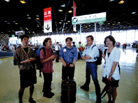
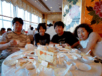
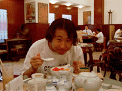
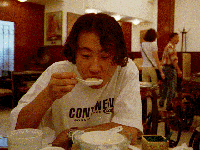
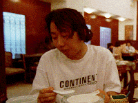

成田空港にて。今にして思えば既にこのとき、青木君と藤巻さんはフレームアウトしている。因果かもしれない。

上記のごとく、藤巻さんと青木君は契れてしまい、その他のメンバーにてCityHallChineseへ行く。味は、復活している。




さようなら、啓徳空港。
ビルの上の誘導灯と、それをかすめながら着陸するジャンボジェット機。
ビルの上を飛ぶジェット機。
啓徳空港無き今、そして香港から活気が無くなった今、香港は終わったという想いがします。
August 17 1998